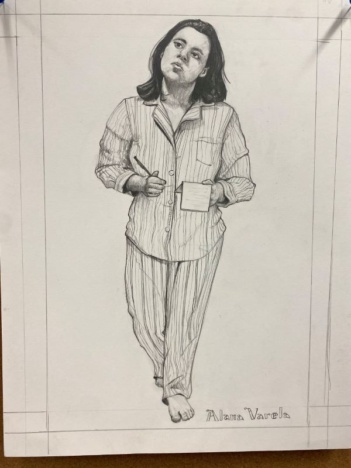
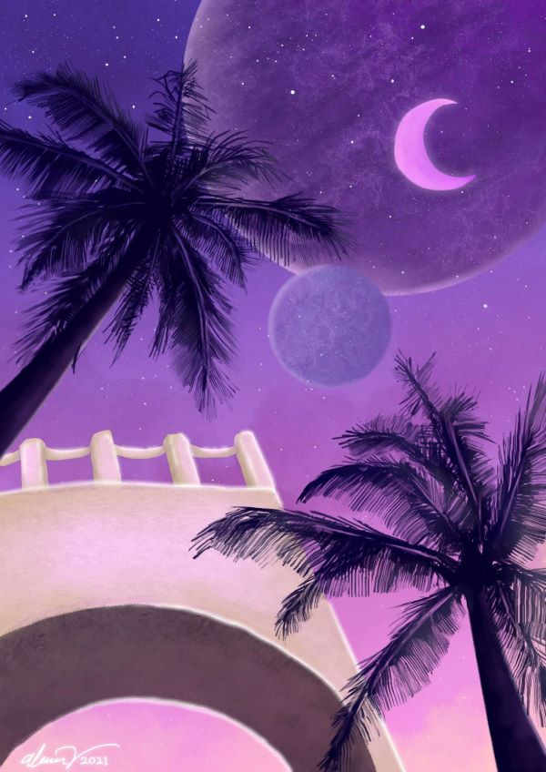
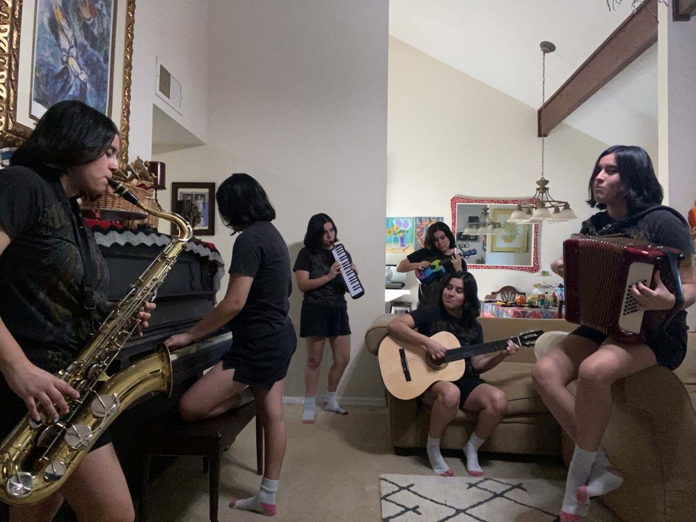
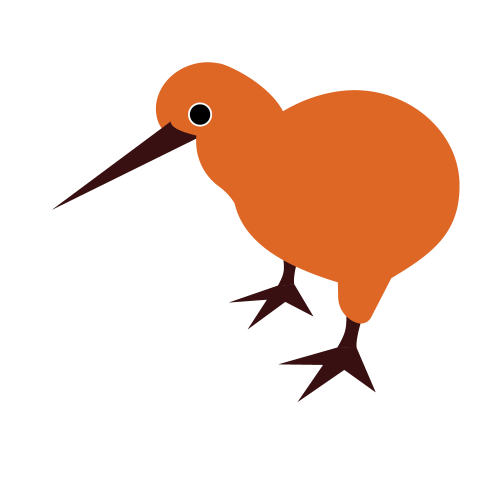
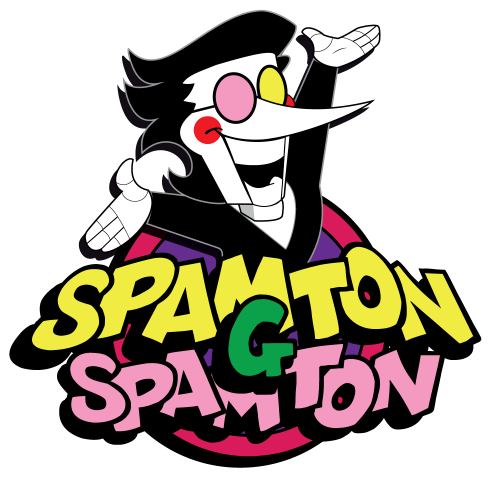

Welcome to Alana's Online Resume!
Alana Varela is an Emerging Media student at Seminole State College of Florida and the University of Central Florida. Her artwork has been featured 5 times in SSC student art shows and won 2 cash awards: Best of 3D Design in 2022 and a Merit Award in 2023. She is committed to mastering the art of animation in every facet.
She has previously worked customer and food service at Panera Bread from Aug 2021-Aug 2022, but is now a full-time student.
Skills
- Hand drawn 2D animation
- Drawing in various mediums (Charcoal, graphite, ink, digital)
- Vector image design
- Sculpting and plaster casting
- Sculpting and plaster casting
- Digital painting
- Video editing
- Audio editing and mixing
- Proficiency in several musical instruments (Accordion, piano, tenor saxophone)
- Can read sheet music
- Basic HTML
- Learning website design
- Learning 3D Animation and Modeling
Software
- Visual Studio Code (HTML)
- Adobe Premiere Pro
- Adobe Photoshop
- Adobe Illustrator
- Opentoonz (professional open source 2D animation software)
- Krita (open source digital painting software)
- Audacity
- Learning Blender for 3D animation and modeling
Social Media Links

Work Samples
Traditional Art



Krita

Photoshop

Illustrator

